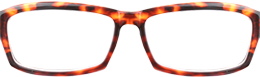
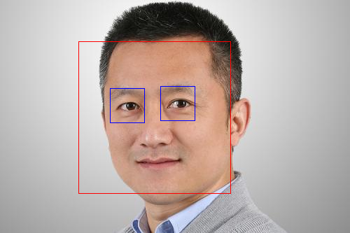
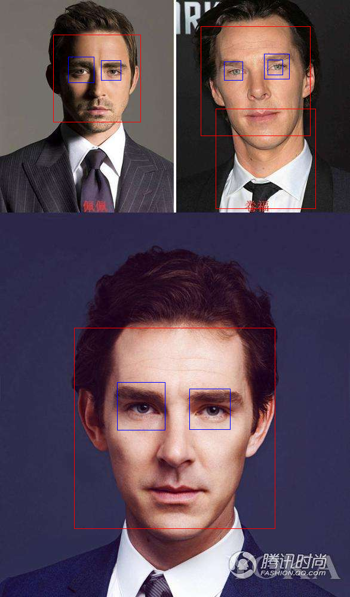

因为项目需要虚拟穿戴效果，于是决定用opencv库， 一开始想法是用以前的c++代码想办法应用到web中，编译成动态链接库.so或者dll在对应平台调用 但这样对资源消耗很大，且视频流高频率调用也是不理想的。
途中还有两种大同小异： 1.用socket连接到服务器，通过网络拉取处理结果 2.本地可执行文件传参运行，取回生成文件 这两种方法对服务器损耗都是很大的，于是就在想有没有本地端运行的呢？ 后来又发现了js脚本 JavaScript很好的底层接触能力，以及强大转换能力，让opencv等轻松驾驭 具体原理：Emscripten，一款LLVM-to-JavaScript的编译器，将C++的底层函数编译成可以直接在浏览器端运行的asm.js或者WebAssembly。而OpenCV.js是通过该Emscripten将OpenCV的函数编译进asm.js或WebAssembly中，并提供JS APIs给web应用使用。 类似的还有
- tracking.js
- clmtrackr
- Headtrackr
-
CCV.js 这些都是偏人脸识别的js库，经过短暂学习类比，将C++代码不完全移植到js脚本
/////////////////代码测试区///////////////////////////// let image = cv.imread('canvasOutput');//镜架 let hand = cv.imread('canvasInput2');//镜架黑膜 let mask = cv.imread('canvasInput2',0); let handok = new cv.Mat(); let maskok = new cv.Mat(); //cv.resize (hand, handok,dsize , 0, 0, cv.INTER_LINEAR); //cv.resize(mask, maskok, dsize , 0, 0, cv.INTER_LINEAR); cv.imshow('canvas3', hand); cv.imshow('canvas4', mask); image = cv.imread('canvasInput'); hand = cv.imread('canvas3'); mask = cv.imread('canvas4',0); /////////////////////////////////////////////////////// //utils.loadImageToCanvas('glass_1.png','canvasOutput'); //utils.loadImageToCanvas('glass_1.png','canvasInput2'); //复原以进行第二次 //镜架缩放 显示 再获取读入 设置roi copyTo 展示到Input //------------------------------------------------------- let src = cv.imread('canvasInput'); let gray = new cv.Mat(); cv.cvtColor(src, gray, cv.COLOR_RGBA2GRAY, 0); let faces = new cv.RectVector(); let eyes = new cv.RectVector(); let faceCascade = new cv.CascadeClassifier(); let eyeCascade = new cv.CascadeClassifier(); // load pre-trained classifiers faceCascade.load('haarcascade_frontalface_default.xml'); eyeCascade.load('haarcascade_eye.xml'); // detect faces let msize = new cv.Size(0, 0); faceCascade.detectMultiScale(gray, faces, 1.1, 3, 0, msize, msize); for (let i = 0; i < faces.size(); ++i) { let eyesflag = 0; let roiGray = gray.roi(faces.get(i)); let roiSrc = src.roi(faces.get(i)); let point1 = new cv.Point(faces.get(i).x, faces.get(i).y); let point2 = new cv.Point(faces.get(i).x + faces.get(i).width,faces.get(i).y + faces.get(i).height); cv.rectangle(src, point1, point2, [255, 0, 0, 255]); // detect eyes in face ROI eyeCascade.detectMultiScale(roiGray, eyes); for (let j = 0; j < eyes.size(); ++j) { if(eyesflag==0) { //每个脸最多一个眼镜，且必须首个eye位置必须在左上半区 if(eyes.get(j).x<=faces.get(i).width/2 && eyes.get(j).y<=faces.get(i).height/2) { let sizerate = (hand.rows / eyes.get(j).height) / 0.9; console.log(faces); let dsize = new cv.Size(hand.cols / sizerate, hand.rows / sizerate); cv.resize (hand, handok,dsize , 0, 0, cv.INTER_LINEAR); cv.resize(mask, maskok, dsize , 0, 0, cv.INTER_LINEAR); imageROI = image.roi(new cv.Rect(faces.get(i).x+eyes.get(j).x-2-eyes.get(j).width/10*0,eyes.get(j).y+faces.get(i).y+eyes.get(j).height/4*0,handok.cols, handok.rows)); handok.copyTo(imageROI,maskok); eyesflag+=1; } console.log(new cv.Point(faces.get(i).x+eyes.get(j).x,eyes.get(j).y+faces.get(i).y)); console.log(new cv.Point(eyes.get(j).x,faces.get(i).width/2)); } let point1 = new cv.Point(eyes.get(j).x, eyes.get(j).y); let point2 = new cv.Point(eyes.get(j).x + eyes.get(j).width,eyes.get(j).y + eyes.get(j).height); cv.rectangle(roiSrc, point1, point2, [0, 0, 255, 255]); } cv.imshow('canvasInput2', roiSrc); roiGray.delete(); roiSrc.delete(); } cv.imshow('canvasOutput', src); /////////////////////////////////////////////////////////// cv.imshow('canvas5', image); ////////////////////////////补充 src.delete(); gray.delete(); faceCascade.delete(); eyeCascade.delete(); faces.delete(); eyes.delete(); image.delete();hand.delete();mask.delete();handok.delete(); maskok.delete(); 说说途中踩的坑把： 1.js矛盾导致canvas不停还原看不到合成效果 2.换用addweighted命令RGB透明通道出错 3.LoadImageToCanvas单独执行才能cv.imread到变量 4.let和var C++版本的imread等命令与js不同 5.video的autoplay和控制截图两种方式（纯html5和opencv方法） 6.优化同一人脸下瞳孔左上区定选防误判 7.最终采用的合图起点坐标算法（镜框宽度1/4（不同型号可能不一致）） 高度1/2偏移至瞳孔处） 瞳孔处利用↓如下眼眶中心取得
目的是精准定位眼球   ↑这是之前缩放和起点算法有问题时候，东方和西方人种间不能很好的正确佩戴眼镜  是因为之前是不停调试比例参数的
是因为之前是不停调试比例参数的
--此处留给视频流处理的过程总结--**
下面是前端设计中的感悟
因为一套系统缺少不了美观的前端设计，（其实主要是切图）
折腾几番，
使用opencv和opencv.js实现虚拟试戴、瞳孔定位功能中的一系列问题 - 2018/3/16 00:30:10